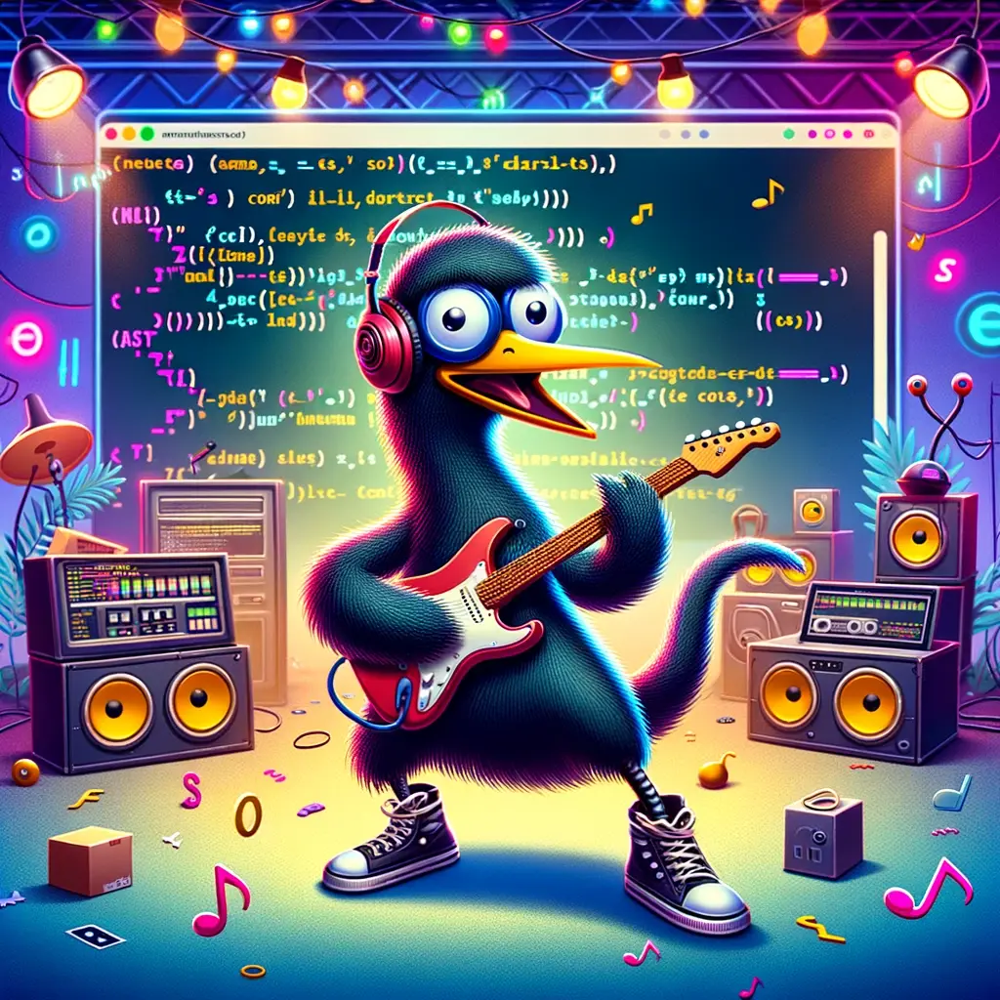

Emu rocks!
Emu: Not Your Daddy's Markup Language
Unless you are my son, then it is your markup language. Er, mine.Ok.. What Is It, Then?
It's a simple opinionated html page generator that lets you write pages that look more or less exactly like this one by using a few common-sense tags. Check out the source that generated this page!We Got GPTs For That
Learn more about Emu straight from the emu's mouth, Eddie. He can help explain what Emu is, what it's useful for, how to hack on it, and so forth.We Also Got Boring Code Snippets
There's no syntax highlighting, but there is a vanilla block when you want to display some code:def factorial(n):
if n == 0:
return 1
else:
return n * factorial(n-1)
result = factorial(5)
print(f"The factorial of 5 is {result}")
Block Quotes Galore
Quote things to your heart's content.Emus are little more than feathered stomachs borne on mighty legs and ruled by a tiny brain. If an emu wants one of your sandwiches, he will get it, and then run away. He cannot help you with your sudoku. — Richard Fortey
You can even nest quotes if you want. — Eric Hamiter